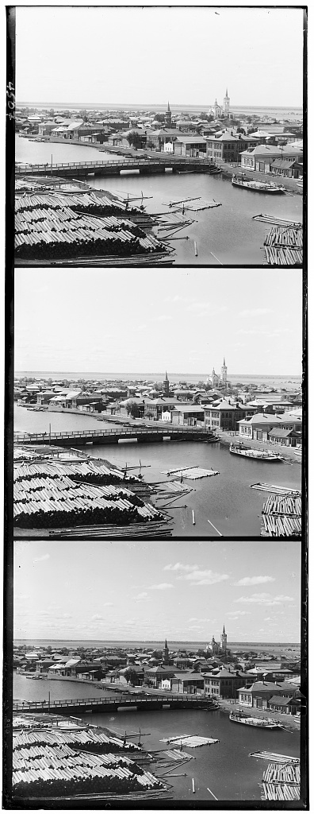
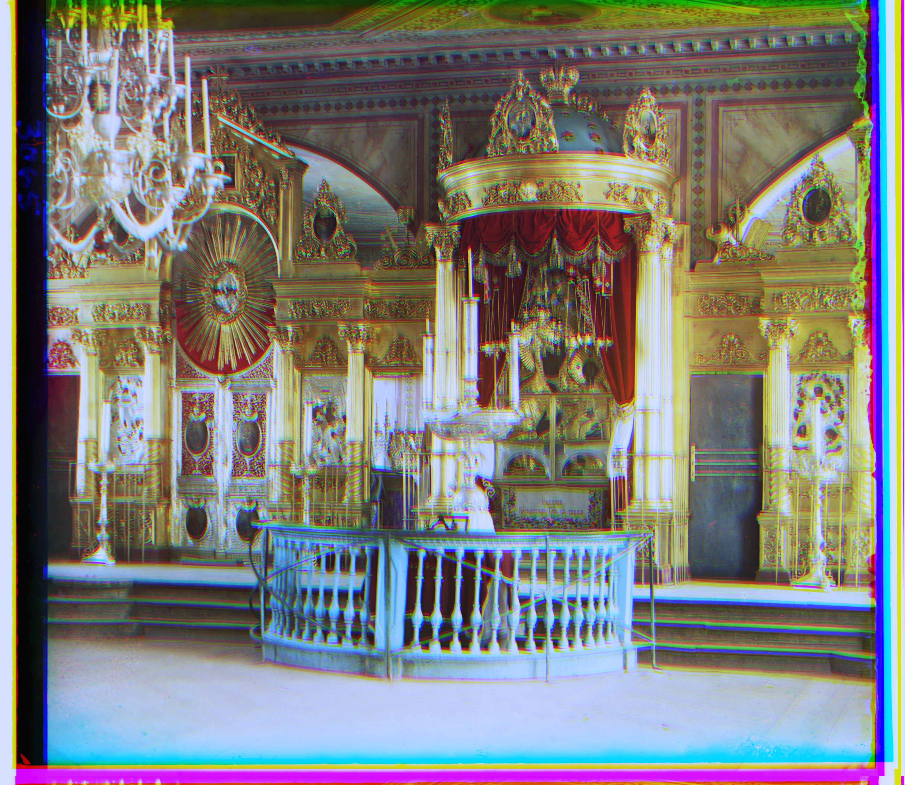
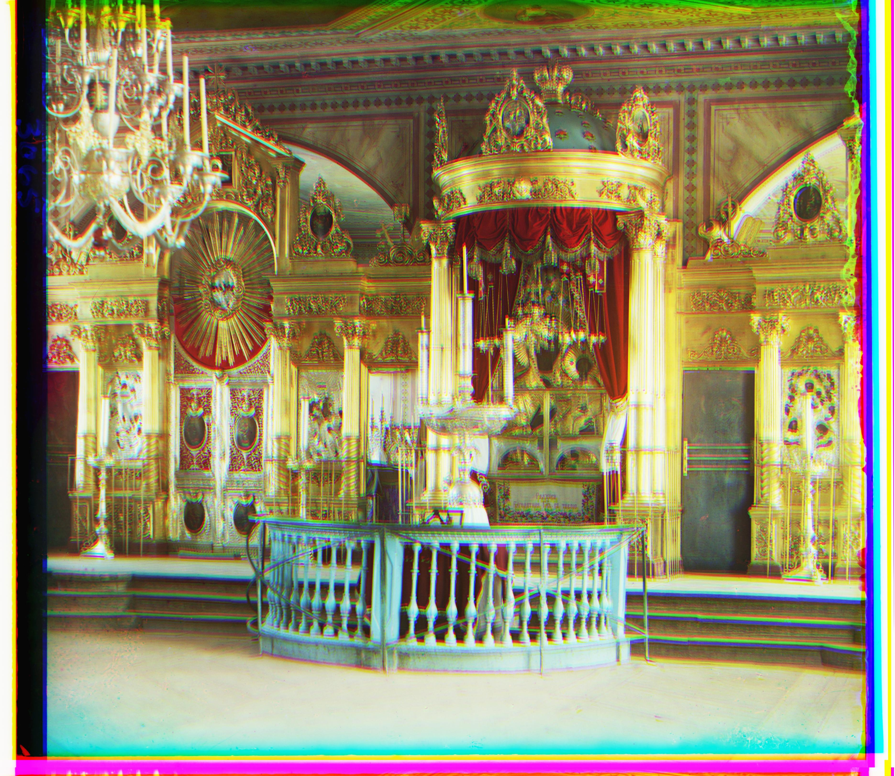

Overview
Historical black-and-white photographs often contain valuable color information encoded in separate RGB channel exposures. This work implements an automated pipeline for aligning and combining these channels to reconstruct full-color images from the Prokudin-Gorskii collection, using multi-scale alignment techniques to handle images of varying sizes.



Methodology
Implementation Details
The implementation supports both single-image and batch processing modes:
PROCESS_SINGLE_IMAGE: Controls whether to process a single image or all images in a directory. This provides flexibility for different processing needs.- File Types: The implementation handles various image file formats through a configurable list of acceptable file extensions, ensuring compatibility with different image types.
Alignment Methods
The alignment methods are tailored to handle images of different sizes:
1. Smaller Images
For smaller images, the alignment approach was sufficient using the L2 norm:
- Search Range: A search range is defined to explore different shifts of the image.
- Shifting and Comparison: The algorithm shifts one image by various amounts within the defined search range and calculates the L2 norm, which measures the difference between the shifted image and the reference image. The goal is to find the shift that results in the smallest L2 norm score, indicating the best alignment.
- Optimal Shift: The shift that achieves the lowest L2 norm score is chosen as the optimal alignment. The image is then adjusted according to this shift, ensuring the best possible alignment with the reference image.
2. Larger Images
For larger images, the alignment method is more advanced as the L2 approach could end up costly:
- Cross-Correlation with FFT: To determine how well two images align, cross-correlation is used. This measures the similarity between the two images as one is shifted over the other. Cross-correlation is performed by multiplying the FFT of the reference image with the conjugate of the FFT of the image to be aligned and then taking the inverse FFT of the result. Even though it is mathematically equivalent to convolution in the spatial domain it ended up being computationally more efficient.
- Gaussian Pyramid: A Gaussian pyramid is created to handle images at multiple scales. By processing images at various resolutions, the alignment can be refined from coarse to fine scales. This method improves accuracy for large images.
- Pyramid Alignment: The alignment starts with the coarsest level of the pyramid and proceeds to finer levels. This multi-scale approach helps in aligning large images, addressing both global and local alignment issues.
Processing Steps
The processing stage consists of several key steps to prepare and finalize the colorized images:
- Normalization: Pixel values of the images are standardized to ensure consistency. This step involves scaling pixel intensities so that they are on a common scale, which is essential for accurate image alignment and colorization.
- Splitting Channels: The image is divided into its RGB (Red, Green, Blue) channels. Each channel is processed separately to facilitate alignment and color adjustment.
- Aligning: Depending on the image size, the appropriate alignment method is applied. Smaller images use the L2 norm approach, while larger images use cross-correlation with FFT and Gaussian pyramids.
- White Balancing: This step corrects color imbalances by setting the brightest color in the image to white. The colors are then scaled based on this adjustment to ensure realistic color representation.
- Stacking and Saving: The aligned RGB channels are combined into a single color image. The final image is saved as a JPEG file, which helps manage file size, and is stored in the specified output directory.
Results
Results from the dataset:
Additional Features
White Balance: A white balance function was implemented to correct color
imbalances in the images, improving overall image quality. The function, white_balance_white,
assumes that the brightest pixel in the image represents white, scaling color channels accordingly.
- The function determines the maximum intensity values for each color channel (red, green, blue) in the image.
- It calculates scaling factors by finding the inverse of these maximum values. This helps ensure that the brightest pixel in each channel is scaled to white.
- These scaling factors are applied to the respective color channels to adjust the intensities. The image values are then clipped to ensure they stay within the valid range [0, 1].
Before:

After:

Additional Examples
Additional colorization results:
Discussion
While many images have been successfully colorized, some show misalignment issues that need to be addressed. For instance, discrepancies in alignment can be observed due to the scoring mechanism used, which did not fully account for the varying contrast levels of the RGB channels. This contrast difference affects the scoring during the pyramid alignment process.
One notable example is the image emir.tif, where the alignment is close but not perfect. The patterns and textures in the outfit of the subject cause the displacement vectors to shift slightly, resulting in a misalignment of the color layers. This issue arises, as I believe, due to the fact that the alignment algorithm struggles with contrasting patterns, which complicates achieving precise alignment.